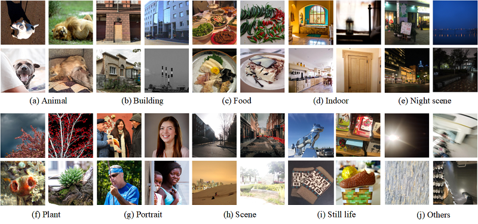

Personalized Image Aesthetics Assessment with Rich Attributes
Yuzhe Yang1† , Liwu Xu1† , Leida Li2, Nan Qie1, Yaqian Li1, Peng Zhang1, Yandong Guo1*
1OPPO Research Institute 2Xidian University
ippllewis@gmail.com, {xuliwu, qienan, liyaqian, zhangpeng6}@oppo.com, ldli@xidian.edu.cn, yandong.guo@live.com
† Equal contribution.
Click to check
[arxiv]. [Paper]. [Code] will also be available in the future.

Abstract: Personalized image aesthetics assessment (PIAA) is challenging due to its highly subjective nature. People's aesthetic tastes depend on diversified factors, including image characteristics and subject characters. The existing PIAA databases are limited in terms of annotation diversity, especially the subject aspect, which can no longer meet the increasing demands of PIAA research. To solve the dilemma, we conduct so far, the most comprehensive subjective study of personalized image aesthetics and introduce a new Personalized image Aesthetics database with Rich Attributes (PARA), which consists of 31,220 images with annotations by 438 subjects. PARA features wealthy annotations, including 9 image-oriented objective attributes and 4 human-oriented subjective attributes. In addition, desensitized subject information, such as personality traits, is also provided to support study of PIAA and user portraits. A comprehensive analysis of the annotation data is provided and statistic study indicates that the aesthetic preferences can be mirrored by proposed subjective attributes. We also propose a conditional PIAA model by utilizing subject information as conditional prior. Experimental results indicate that the conditional PIAA model can outperform the control group, which is also the first attempt to demonstrate how image aesthetics and subject characters interact to produce the intricate personalized tastes on image aesthetics. We believe the database and the associated analysis would be useful for conducting next-generation PIAA study. The database will be freely available to the research community.
Download Instruction
Note that PARA is available for academic purpose only. If you wish to download our PARA database, please click this
[Download PARA]
Bibliography
If you find our work useful, please cite this paper, thank you! (Bib. incoming...)
@InProceedings{Yang_2022_CVPR,
author = {Yang, Yuzhe and Xu, Liwu and Li, Leida and Qie, Nan and Li, Yaqian and Zhang, Peng and Guo, Yandong},
title = {Personalized Image Aesthetics Assessment With Rich Attributes},
booktitle = {Proceedings of the IEEE/CVF Conference on Computer Vision and Pattern Recognition (CVPR)},
month = {June},
year = {2022},
pages = {19861-19869}
}
🔥 Recruitment Information
OPPO research Institute has long-term open full-time and internship positions around computer vision, including aesthetics quality assessment, image recognition, object detection, image retrive, semi/self supervised learning, multimodal learning, etc.
If any interests, please feel free to contact with Yaqian Li, Email: liyaqian@oppo.com.